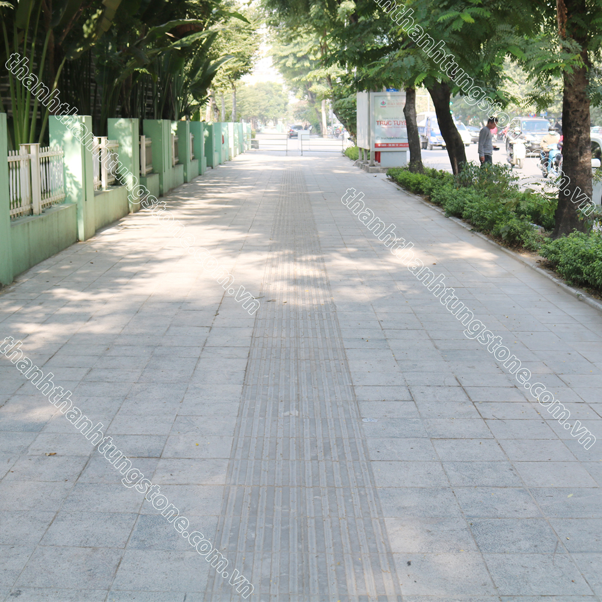
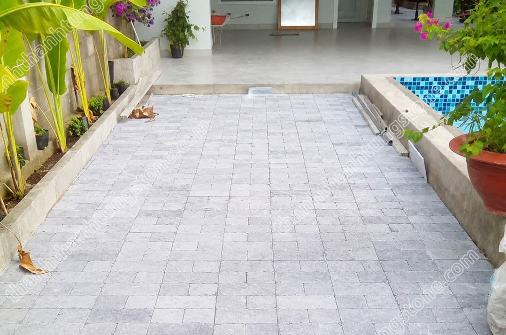
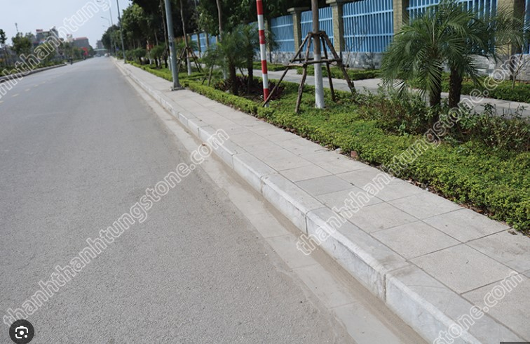
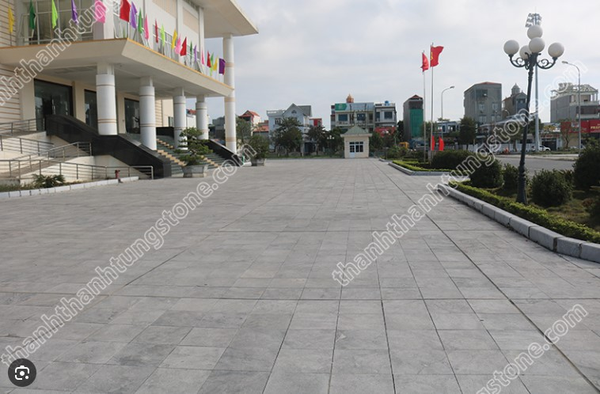
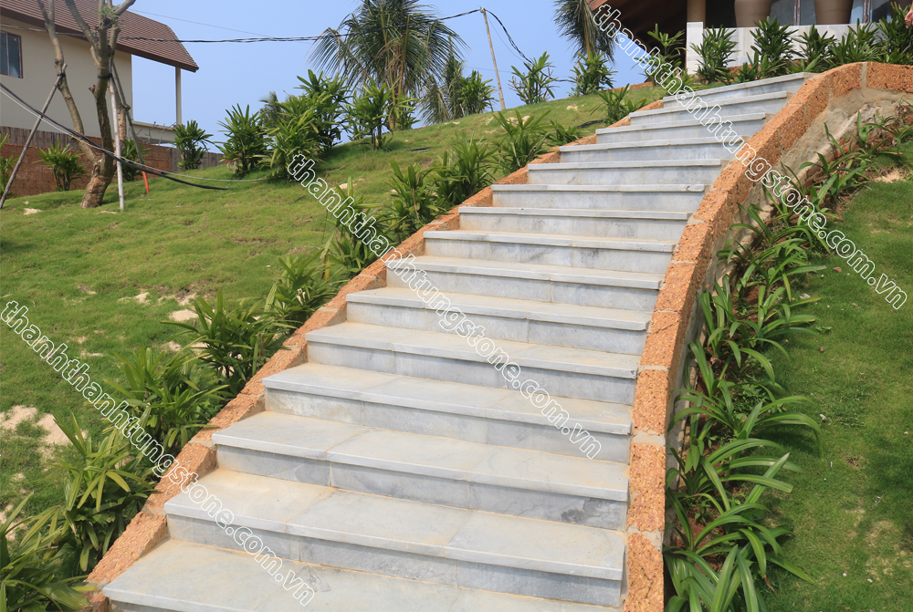
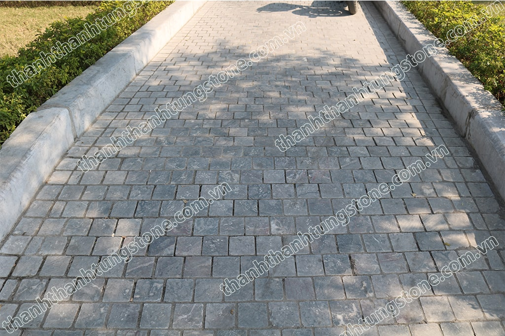
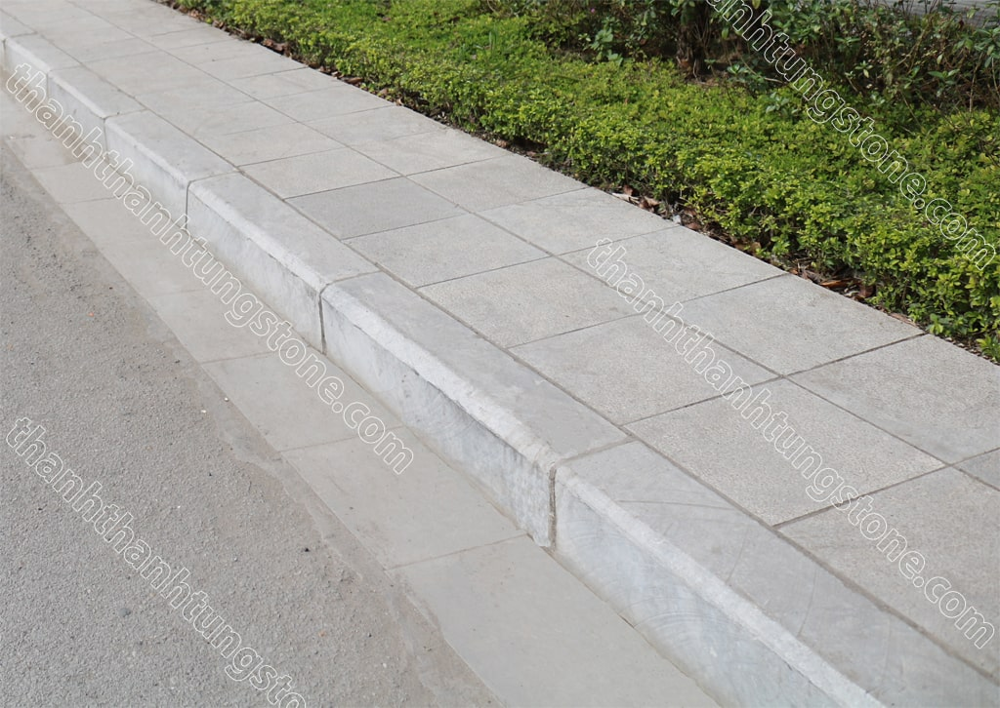
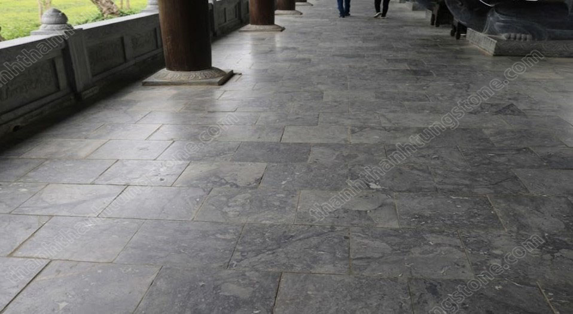

Đá Lát Sân Vườn Ghi Sáng – Giải Pháp Ngoại Thất Bền Đẹp Cho Mọi Công Trình
📑 Mục lục bài viết
Trong những năm gần đây, xu hướng sử dụng đá tự nhiên trong thiết kế ngoại thất ngày càng được ưa chuộng. Trong đó, đá ghi sáng lát sân vườn nổi bật nhờ vẻ đẹp hiện đại, màu sắc trang nhã cùng độ bền vượt trội theo thời gian. Không chỉ mang lại giá trị thẩm mỹ cao, loại đá này còn phù hợp với nhiều phong cách kiến trúc khác nhau từ nhà phố, biệt thự cho đến resort hay quán cà phê sân vườn.

Đá ghi sáng là gì?
Đá ghi sáng là dòng đá tự nhiên có màu xám ghi nhạt đặc trưng, được khai thác chủ yếu tại Thanh Hóa. Nhờ cấu tạo đá chắc chắn, độ cứng cao và khả năng chịu lực tốt, loại đá này thường được sử dụng để lát sân, lối đi, bậc tam cấp, vỉa hè hoặc các khu vực ngoại thất cần độ bền lâu dài.
Khác với nhiều loại vật liệu nhân tạo dễ phai màu theo thời gian, đá ghi sáng giữ được màu sắc ổn định dưới tác động của nắng mưa. Chính vì vậy, đây được xem là lựa chọn lý tưởng cho các công trình ngoài trời.



Vì sao đá ghi sáng được ưa chuộng trong lát sân vườn?
1. Màu sắc hiện đại, dễ phối cảnh
Tông màu ghi sáng mang vẻ đẹp trung tính, nhẹ nhàng nhưng không kém phần sang trọng. Đây là gam màu rất dễ phối hợp với cây xanh, tiểu cảnh, hồ cá hay các vật liệu khác như gỗ, sỏi hoặc kính.
Dù theo phong cách hiện đại hay cổ điển, đá ghi sáng vẫn tạo được sự hài hòa cho tổng thể không gian sân vườn. Đặc biệt, màu ghi sáng giúp khu vực lát sân trông sạch sẽ và rộng rãi hơn so với các gam màu tối.
2. Độ bền cao, chịu lực tốt
Đá ghi sáng là đá tự nhiên nguyên khối nên có khả năng chịu lực rất tốt. Khi được thi công đúng kỹ thuật, bề mặt đá có thể sử dụng bền bỉ hàng chục năm mà không lo nứt vỡ hay xuống cấp.
Đây là ưu điểm lớn so với nhiều loại gạch sân vườn thông thường dễ bong tróc hoặc phai màu sau thời gian dài sử dụng.
3. Chống trơn trượt hiệu quả
Một trong những yếu tố quan trọng khi lựa chọn vật liệu lát sân vườn là khả năng chống trơn. Đá ghi sáng thường được gia công bề mặt băm, khò lửa hoặc phun cát để tăng độ ma sát, giúp di chuyển an toàn ngay cả khi trời mưa.
Điều này đặc biệt phù hợp với gia đình có trẻ nhỏ, người lớn tuổi hoặc các khu vực thường xuyên tiếp xúc với nước như quanh hồ bơi và sân vườn ngoài trời.
4. Ít bám rêu mốc, dễ vệ sinh
Bề mặt đá tự nhiên có độ cứng cao nên hạn chế tình trạng thấm nước và bám rêu mốc. Chỉ cần vệ sinh định kỳ bằng nước sạch hoặc vòi xịt là sân vườn luôn giữ được vẻ đẹp như mới.
Đối với những công trình lớn như resort, quán cà phê hay homestay, việc sử dụng đá ghi sáng còn giúp tiết kiệm đáng kể chi phí bảo trì về lâu dài.

So sánh đá ghi sáng với các dòng đá lát sân phổ biến ⚖️
| Tiêu chí | Đá ghi sáng | Đá bazan | Đá xanh rêu |
|---|---|---|---|
| Màu sắc | Xám ghi nhạt | Xám đen | Xanh rêu đậm |
| Phong cách | Hiện đại, sang trọng | Tối giản | Cổ điển |
| Độ bền | Rất cao | Rất cao | Rất cao |
| Chống trơn | Tốt | Rất tốt | Tốt |
| Ứng dụng | Sân vườn, resort | Hồ bơi, sân ngoài trời | Biệt thự, lối đi |
Các kiểu gia công đá ghi sáng phổ biến
Hiện nay, đá ghi sáng lát sân vườn được gia công với nhiều kiểu bề mặt khác nhau để phù hợp từng nhu cầu sử dụng.
Đá ghi sáng băm mặt
Đây là loại phổ biến nhất trong lát sân vườn. Bề mặt được băm nhám giúp tăng khả năng chống trơn trượt và tạo vẻ đẹp tự nhiên, mạnh mẽ.
Đá ghi sáng mài honed
Bề mặt được mài mịn nhẹ nhưng vẫn giữ độ nhám vừa phải. Loại này phù hợp với những công trình yêu cầu tính thẩm mỹ cao và phong cách hiện đại.
Đá ghi sáng khò lửa
Được xử lý bằng nhiệt độ cao để tạo độ nhám tự nhiên trên bề mặt. Đây là lựa chọn được nhiều kiến trúc sư yêu thích cho các khu vực ngoại thất cao cấp.
Đá ghi sáng giả cổ
Bề mặt và cạnh đá được xử lý tạo cảm giác cũ tự nhiên, mang phong cách cổ điển và gần gũi với thiên nhiên.

Ứng dụng của đá ghi sáng trong thực tế
Đá ghi sáng có tính ứng dụng rất cao trong thiết kế ngoại thất:
- Lát sân vườn biệt thự
- Lát lối đi công viên
- Lát vỉa hè
- Lát quanh hồ bơi
- Bậc tam cấp
- Khu nghỉ dưỡng, resort
- Quán cà phê sân vườn
- Tiểu cảnh ngoài trời
Nhờ màu sắc nhã nhặn và vẻ đẹp tự nhiên, loại đá này giúp không gian trở nên sang trọng nhưng vẫn gần gũi, thư giãn.

Kinh nghiệm chọn đá ghi sáng chất lượng
Khi lựa chọn đá ghi sáng lát sân vườn, cần chú ý một số yếu tố sau:
Kiểm tra độ dày đá
Đối với khu vực sân vườn hoặc nơi có xe cộ di chuyển, nên chọn đá có độ dày từ 2cm trở lên để đảm bảo khả năng chịu lực.
Chọn bề mặt phù hợp
Nếu lát khu vực thường xuyên ẩm ướt, nên ưu tiên bề mặt băm hoặc khò lửa để chống trơn tốt hơn.
Lựa chọn đơn vị uy tín
Đá tự nhiên cần được khai thác và gia công đúng kỹ thuật để đảm bảo độ bền cũng như màu sắc đồng đều. Vì vậy, nên chọn các đơn vị có xưởng sản xuất trực tiếp và chính sách bảo hành rõ ràng.

Giá đá ghi sáng lát sân vườn có đắt không?
Mức giá của đá ghi sáng phụ thuộc vào nhiều yếu tố như:
- Kích thước đá
- Độ dày
- Kiểu gia công bề mặt
- Số lượng đặt hàng
- Khoảng cách vận chuyển
So với các vật liệu nhân tạo, chi phí đầu tư ban đầu của đá tự nhiên có thể cao hơn một chút. Tuy nhiên, xét về tuổi thọ sử dụng và giá trị thẩm mỹ lâu dài thì đây là giải pháp kinh tế và bền vững hơn rất nhiều.
Kết luận
Đá ghi sáng lát sân vườn không chỉ là vật liệu xây dựng mà còn góp phần tạo nên vẻ đẹp sang trọng, gần gũi thiên nhiên cho không gian sống. Với ưu điểm về độ bền, khả năng chống trơn, dễ vệ sinh và màu sắc hiện đại, loại đá này ngày càng được nhiều gia chủ và kiến trúc sư lựa chọn cho các công trình ngoại thất.
Nếu bạn đang tìm kiếm một loại đá vừa đẹp vừa bền cho sân vườn, đá ghi sáng chắc chắn là lựa chọn đáng để cân nhắc.
❓ Câu hỏi thường gặp
Đá ghi sáng có phù hợp lát sân vườn không?
Có. Đây là dòng đá tự nhiên rất được ưa chuộng cho sân vườn nhờ độ bền cao và khả năng chống trơn tốt.
Đá ghi sáng có bị phai màu theo thời gian không?
Không. Đá tự nhiên có khả năng giữ màu rất tốt dưới điều kiện thời tiết ngoài trời.
Đá ghi sáng có dễ vệ sinh không?
Có. Bề mặt đá cứng chắc, ít bám bẩn và có thể vệ sinh đơn giản bằng nước sạch.
📞 Liên hệ tư vấn
Thanh Thanh Tùng Stone chuyên cung cấp và thi công các dòng đá tự nhiên chất lượng cao trên toàn quốc.
Hotline: 097 929 8888
Website: thanhthanhtungstone.com